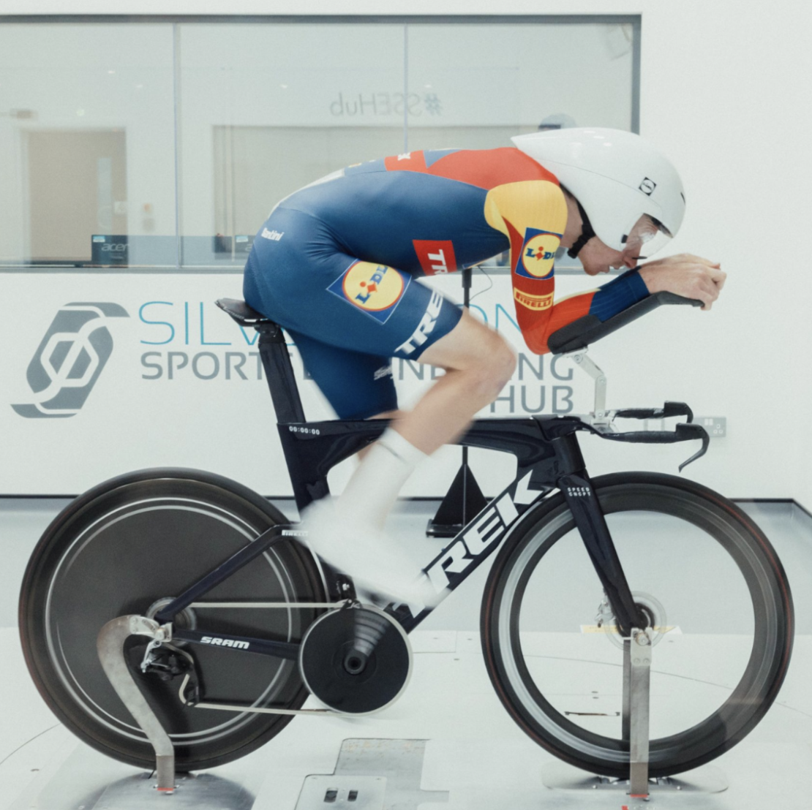
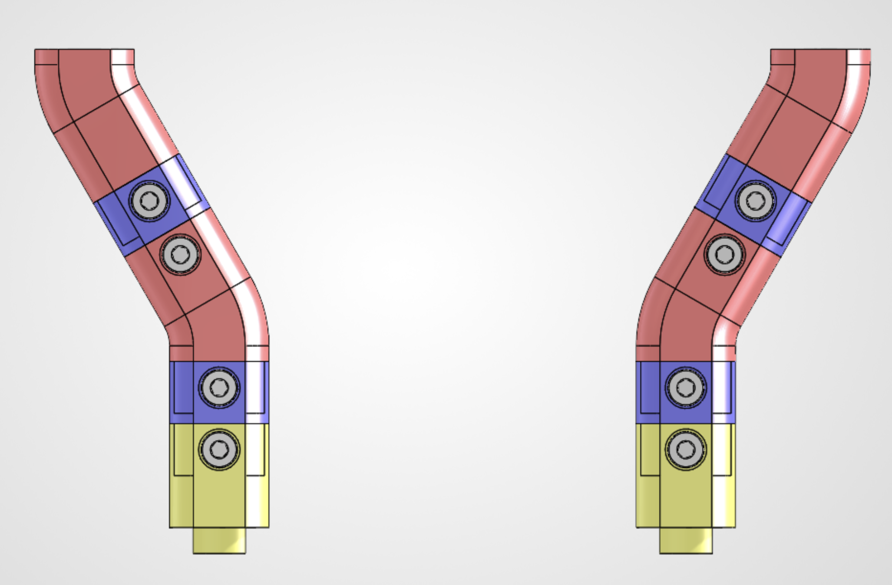
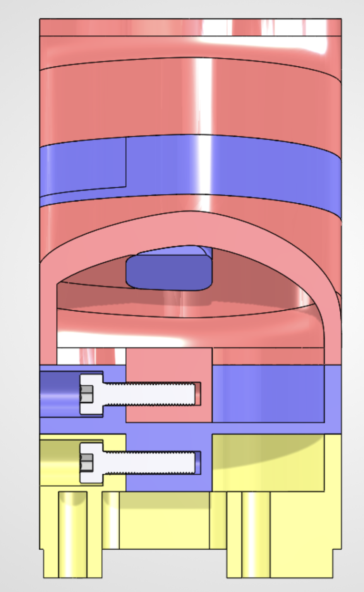

Modular Aerobar Positioning System
Modular aerobar stack redesign for Lidl-Trek WorldTour time trial bikes, replacing custom 3D-printed aluminum parts with standardized, CNC-machinable components.

Objective
Redesign the aerobar positioning system for the Lidl-Trek professional cycling team, intended for use at WorldTour races such as the Tour de France. The existing system relied on custom 3D-printed aluminum components tailored to individual riders, making each configuration expensive to manufacture and difficult to modify. The goal was to develop a lighter, modular system using standardized components while maintaining rider-specific positioning.
Design Approach
The system is being designed in SolidWorks around universal components and interchangeable spacers, with each spacer controlling a specific aspect of rider fit. Separate spacers provide height, lateral position, fore-aft position, and aerobar pitch angle adjustment. By combining these components, different rider positions can be achieved without designing and manufacturing a unique stack for each athlete.

Manufacturing & Design Iteration
The redesign shifts the system from custom metal additive manufacturing toward standardized, CNC-machinable components. Part geometry, manufacturability, assembly, and reconfigurability are being considered throughout the design process to reduce manufacturing costs while maintaining the adjustability required for individual rider positions.

Next Steps
The system is being actively iterated based on feedback from Lidl-Trek engineers and race mechanics, particularly around rider positioning, assembly, and practical race-bike setup. This feedback is being incorporated into each design revision as the system moves toward a final architecture.
The next step is to analyze rider fit data across the team to further reduce part count. If common configurations emerge, such as a majority of riders using a similar stack height, multiple spacer combinations can be consolidated into universal, single-body components. This would retain adjustment where needed while reducing the total part count and weight of the system.